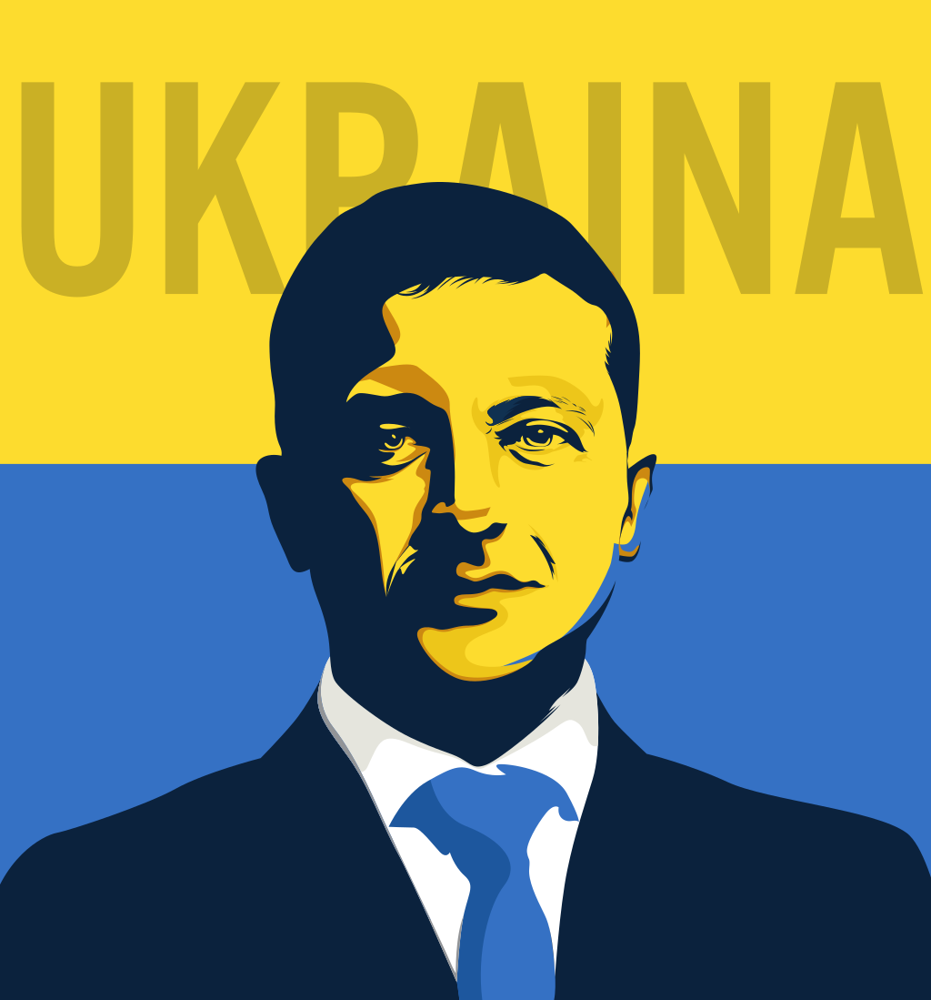

Volodumyr Zelenskiy
Volodymyr Oleksandrovych Zelenskyy (born 25 January 1978), also transliterated as Zelensky or Zelenskiy, is a Ukrainian politician and former comedian and actor who has served as the sixth and current president of Ukraine since 2019.
Born to a Ukrainian Jewish family, Zelenskyy grew up as a native Russian speaker in Kryvyi Rih, a major city of Dnipropetrovsk Oblast in central Ukraine. Prior to his acting career, he obtained a degree in law from the Kyiv National Economic University. He then pursued a career in comedy and created the production company Kvartal 95, which produced films, cartoons, and TV shows including the TV series Servant of the People, in which Zelenskyy played the role of the Ukrainian president. The series aired from 2015 to 2019 and was immensely popular. A political party bearing the same name as the television show was created in March 2018 by employees of Kvartal 95.
Zelenskyy announced his candidacy in the 2019 Ukrainian presidential election on the evening of 31 December 2018, alongside the New Year's Eve address of then-president Petro Poroshenko on the TV channel 1+1. A political outsider, he had already become one of the frontrunners in opinion polls for the election. He won the election with 73.23 percent of the vote in the second round, defeating Poroshenko. He has positioned himself as an anti-establishment and anti-corruption figure.